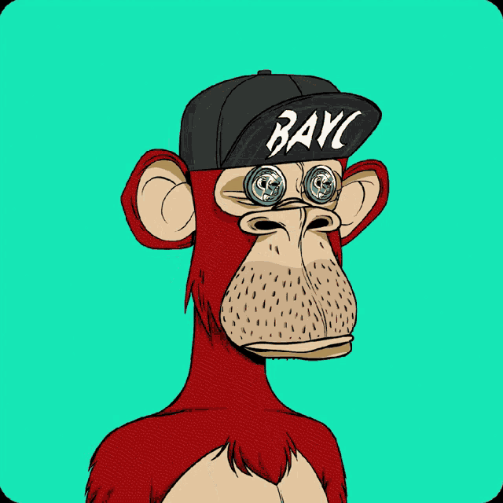
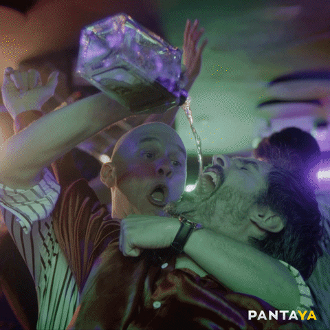
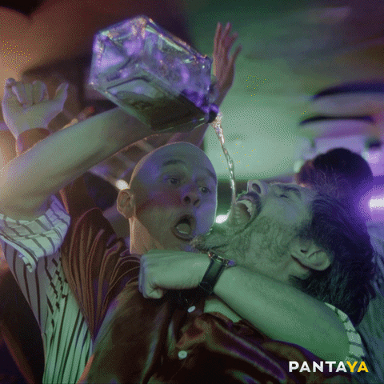

Presentación
¿Quien soy?

Mi nombre es José Miguel Ruiz Pizano, vivo en Moroleón GTO y nací el 29 de noviembre del 2003, teniendo hasta el momento 18 años
Actualmente estoy estudiando la carrera de sistemas computacionales siendo alumno del ITSUR , anteriormente mis estudios fueron desde la primaria en la escuela Francisco I Madero , para después pasar a la secundaria ESOE de Uriangato y, por último, llegue a la Preparatoria del Sur de Guanajuato donde en el 5to semestre elegí irme a la carrera de Ingenieras.
decidí estudiar la carrera de sistemas computacionales porque realmente no sabía o no tenía como tal una idea de que estudiar pero está me llamó la atención por el uso de la computadora y el futuro proyectado que está en ella porque como tal nunca había programado nada.Sin embargo me ha gustado lo que he aprendido este tiempo en la universidad
Parte de mis pasatiempos son:
 Jugar futbol
Jugar futbol
 Hacer ejercicio
Hacer ejercicio
 Jugar videojuegos
Jugar videojuegos
 Escuchar música

Salir con mis amigos
Escuchar música

Salir con mis amigos
proximamente en el futuro...
Programas/paginas para la creacion del proyecto